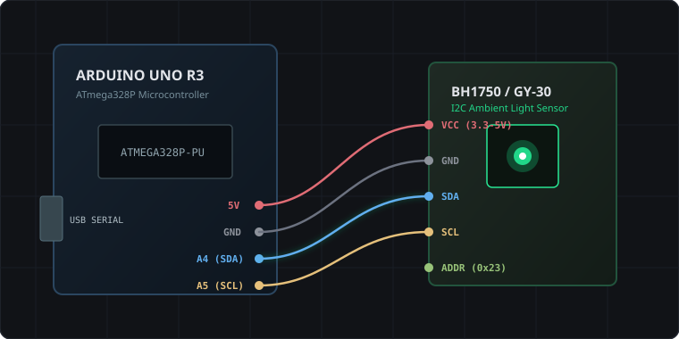
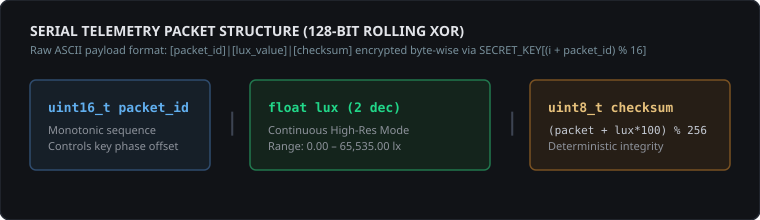

LuxSense Pro
DevPro-CORP Metrology
Engineered for metrology labs, scientific benchmarking, and ambient illuminance inspection. Pairs seamless Arduino Uno hardware acquisition with rolling-128 XOR encrypted telemetry and automated, cryptographically verified desktop updates.
LuxSense Pro unites high-fidelity hardware acquisition with robust security, mathematical calibration, and continuous historical logging.
Continuous 2.5 Hz high-resolution sampling over USB serial with rolling-128 XOR encrypted packets and modular checksum validation.
Adjust dark-level offset and optical multiplier gain with mathematical live preview. Saved directly to persistent storage for sensor consistency.
Automatically records verified readings to a local SQLite database in Windows AppData. Calculate min, max, average, and export to CSV instantly.
Integrated update manager monitors GitHub Releases REST API, checks semantic versions, shows changelogs, and downloads verified payloads.
Enforces strict SHA-256 hash checks and Windows Authenticode publisher validation before executing any installer payload.
Dedicated updater process isolates file replacement, creates a backup snapshot, and executes automatic rollback if an update fails.
The system interfaces an ATmega328P microcontroller with an optical photodiode array over an I2C communication bus.


A dark, high-contrast user experience built with PyQt6. Features five specialized operational panels.
Instantaneous digital readout with large segmented font, connection health beacon, packet serial counter, and rolling XOR integrity status.
Aggregates min/max/average measurements, displays real-time sample counts, and lets engineers export tabular data to standardized CSV files.
Fine-tune zero-point offset and linear gain coefficient with laboratory notes. Data persists in AppData, surviving software updates.
Direct GitHub Releases checking, preview/stable release channels, manual trigger buttons, and transparent storage location indicators.
Official ownership, links to product documentation, issue trackers, and GitHub repository source code.
Handles serial port disconnection, reconnects automatically with exponential backoff, and provides diagnostic warnings.
Download verified distribution packages. All binaries are cryptographically hashed and digitally signed.
Standard Production Release for Windows 10 & 11 (64-bit)
Continuous delivery tracking for LuxSense Pro releases published to GitHub.
Initial sensor interface with PyQt6 live monitor and USB serial driver.
Comprehensive guides for hardware wiring, software setup, driver troubleshooting, and community support.
Step-by-step walkthrough for deploying LuxSense Pro on Windows workstations, including silent enterprise flags.
View Installation Guide →Pinouts, schematic diagrams, I2C pull-up resistors, and power supply specifications for Arduino Uno and BH1750.
View Hardware Guide →Solutions for COM port detection, CH340 / FTDI USB-UART drivers, Windows Device Manager conflicts, and permissions.
View Troubleshooting →Report anomalies, submit diagnostic logs, or request metrology features directly on our official issue tracker.
Open GitHub Issues →Engineered with precision and dedication to open instrumentation standards.
Spearheads core system architecture, PyQt6 instrumentation framework, continuous release pipelines, and secure update protocols.
Designs microcontroller firmware, I2C bus communications, rolling-128 XOR telemetry ciphers, and hardware-in-the-loop validation.
Specializes in optical radiometry, photodiode spectral response curves, zero-offset calibration mathematics, and automated test suites.
DevPro-CORP is an engineering collective dedicated to building reliable scientific instrumentation, intelligent embedded systems, and robust developer platforms. We believe in high standards of software craftsmanship, meticulous hardware design, cryptographic integrity, and complete ownership of the engineering stack.
LuxSense Pro is an official product in the DevPro ecosystem, bridging physical photodiode measurements with desktop scientific tooling and zero-compromise automated release channels.